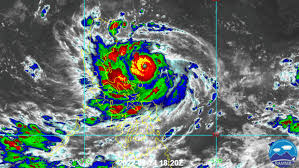

The Story
A typhoon is a mature tropical cyclone that develops in the western part of the North Pacific Ocean, one of the most active planetary basins on Earth. While they are physically identical to hurricanes and cyclones in other parts of the world, typhoons are renowned for their sheer scale and ferocity, fueled by the vast, uninterrupted expanse of warm Pacific waters. They are atmospheric titans, weather engines operating on a scale so massive they can be seen clearly from the International Space Station.
The engine of a typhoon runs entirely on thermal energy. When ocean temperatures rise, massive amounts of seawater evaporate into the atmosphere. As this warm, moist air rises, it creates an area of low pressure below. Surrounding air rushes in to fill the void, and thanks to the rotation of the Earth (the Coriolis effect), this inward rush begins to spin. Over days or weeks, this swirling mass of thunderstorms organizes, tightening around a calm, devastatingly low-pressure center known as the "eye." The eye wall, the ring of storms immediately surrounding this center, contains the storm's most violent winds, often exceeding 150 miles per hour.
When a typhoon makes landfall, it brings a trinity of destruction: torrential rains that cause massive inland flooding, catastrophic winds that can level infrastructure, and worst of all, the storm surge. A storm surge is a literal dome of ocean water, pushed ahead by the typhoon's winds and low pressure, that inundates the coastline like a slow-moving tsunami. Yet, despite their terror, typhoons are a vital component of the global climate system. They act as massive atmospheric release valves, pulling excess heat from the tropics and distributing it toward the poles, ensuring the Earth’s thermal balance is maintained.

Philosophical Questions
Are borders irrelevant to nature?
We carve the world into nations, drawing strict borders on maps and fighting over invisible lines. Yet, a single typhoon can sweep across the Philippines, Taiwan, China, and Japan in a matter of days, completely oblivious to human geopolitics.
This massive storm forces us to recognize that the Earth operates as a single, undivided, and interconnected system. It asks us if our political divisions make sense when the most powerful forces governing our lives treat the entire globe as one shared territory.
How do we balance preparation with absolute powerlessness?
Unlike an earthquake, a typhoon gives us days of warning. We can track its exact path using satellites, board up our windows, and evacuate cities. We apply all of our advanced science just to watch it arrive.
But despite all this foresight, we cannot stop or steer it. This creates a profound psychological paradox: we possess the god-like technology to see the future of the storm, yet remain biologically powerless to prevent it. It teaches us a humbling lesson about the absolute limits of human control.
Is a storm an attacker, or just the planet balancing itself?
When a typhoon destroys a community, it feels like a targeted assault. The vocabulary we use—"the storm slammed the coast" or "wreaked havoc"—personifies the cyclone as a malicious enemy.
However, physics tells us that a typhoon is simply the planet trying to cool itself down, transferring heat from the equator to the north. It challenges us to detach our human emotions from natural mechanics, forcing us to accept that the universe is not out to get us; it is just blindly seeking equilibrium.